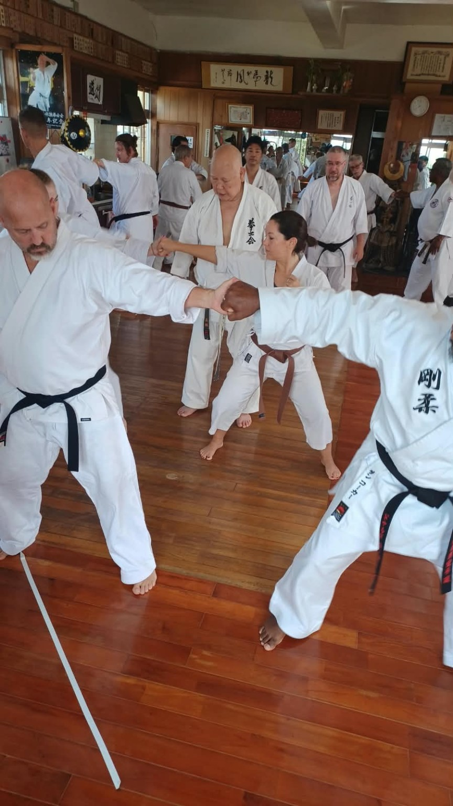
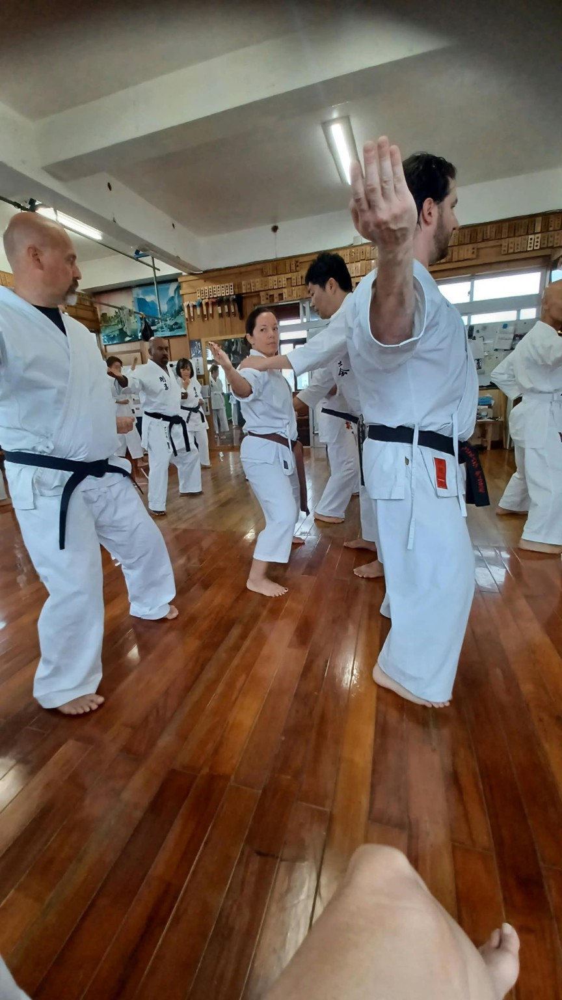
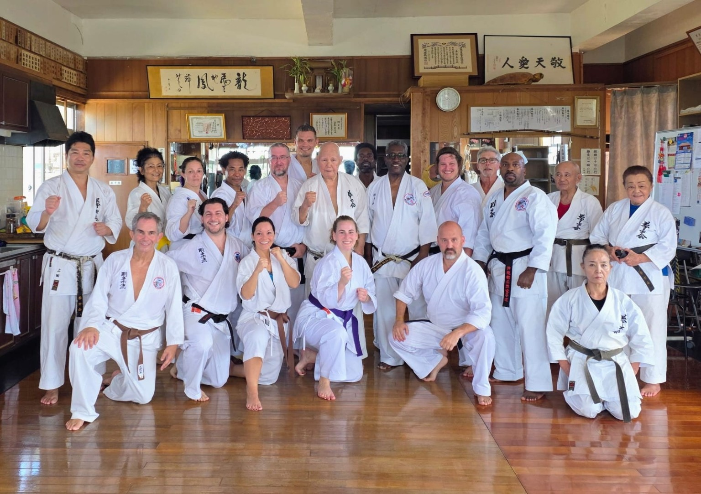

Okinawan Goju-Ryu
Learning with a partner
Practice gives Robyn a chance to refine her technique and learn through close attention and repetition.
Practice in motion
Robyn studies Okinawan Goju-Ryu karate and taekwondo, where training, competition, and community are part of the experience.

Okinawan Goju-Ryu
Practice gives Robyn a chance to refine her technique and learn through close attention and repetition.

Taekwondo and karate
Both styles involve sparring, kicks, punches, and blocks, while each has its own language and approach to class.

Okinawa
Meeting masters who corrected her technique helped Robyn see new ways to grow and support other students.